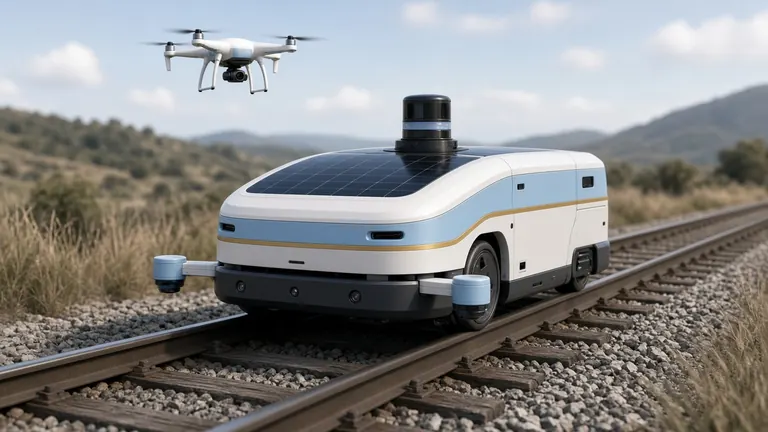
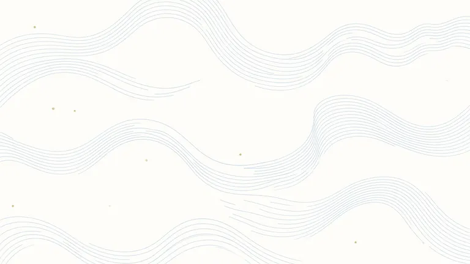
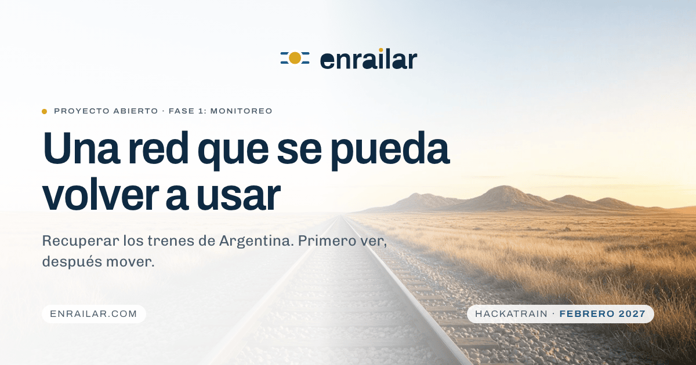
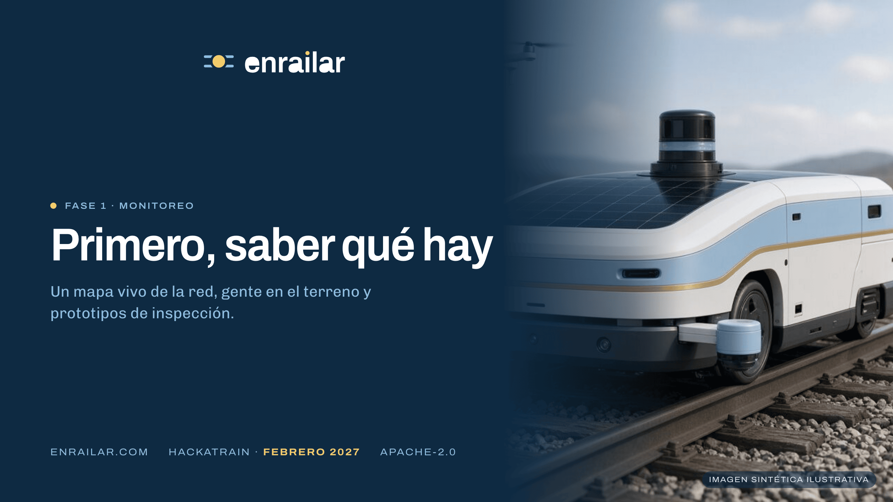
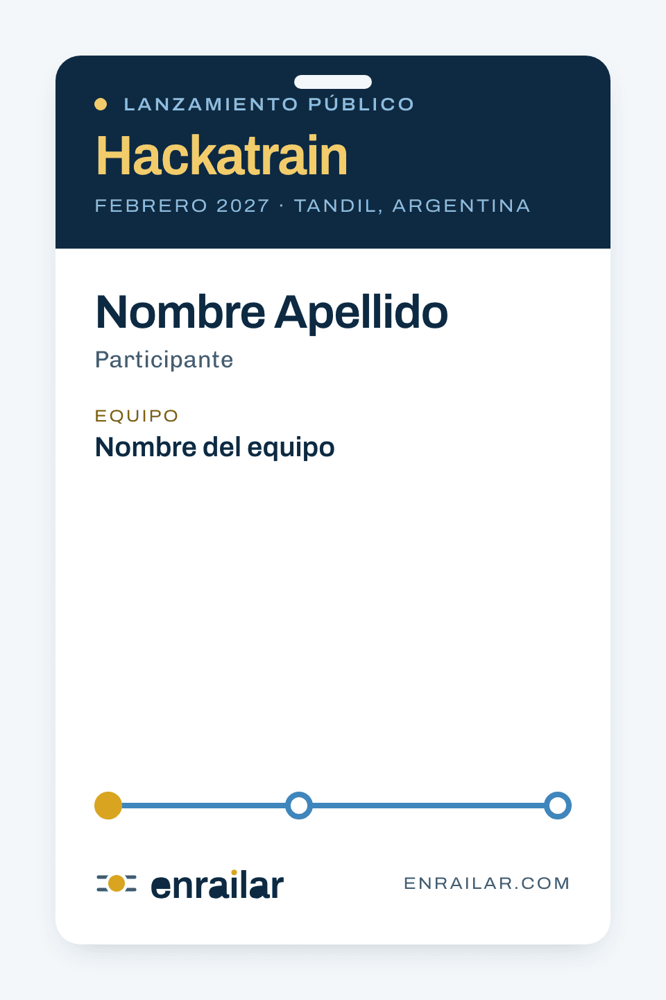
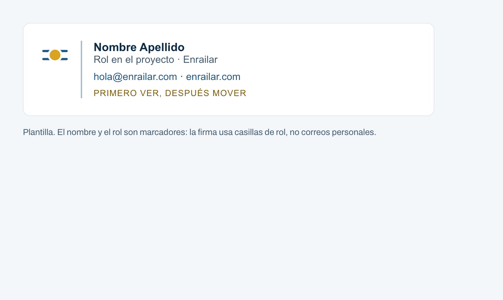



Manual de marca · v1.0
Enrailar
Celeste, blanco y oro como material, no como bandera. Este manual define cómo se ve, cómo habla y cómo se aplica Enrailar en la web, en documentos y en el Hackatrain.
1
ADN de marca
Propósito
Que los trenes de Argentina vuelvan a servir, empezando por saber qué hay.
Misión
Construir, en abierto, la tecnología y la organización para recuperar, mantener y operar la red ferroviaria: un mapa vivo de la infraestructura, inspección con robots y drones, software de coordinación y energía renovable en el corredor. Primero en Tandil, después en el resto del país y en América Latina.
Visión
Una red que se pueda volver a usar: medida, mantenida y operada con evidencia pública, por una organización cooperativa donde quien firma una decisión de seguridad es una persona identificable.
Valores
| Valor | En la práctica |
|---|---|
| Abierto | Código, datos y protocolos públicos con licencia Apache-2.0. Lo que se construye se publica. |
| Cooperativo | Técnicos, trabajadores ferroviarios, municipios, comercios y usuarios en la misma mesa. |
| Transparente | Presupuestos, propuestas y avances se publican a medida que existen. Sin promesas sin fecha. |
| Responsable | La operación y las decisiones de seguridad quedan en profesionales identificables. |
| Concreto | Primero el mapa que se pueda verificar, después el prototipo, después el corredor. |
Personalidad
Enrailar es una ingeniera de vía que explica con calma. Esperanzadora sin grandilocuencia, técnica sin jerga innecesaria, seria sin solemnidad. Cooperativa: habla de "nosotros" y nombra a los demás. Transparente: dice lo que no sabe.
Voz y tono
Sí
"La fase 1 es monitoreo. Un mapa vivo de estaciones, vías y puentes, con fotos, fecha y estado."No
"¡Estamos revolucionando el transporte argentino con tecnología de punta!"Sí
"El anuncio no fija un día. La referencia es Febrero 2027."No
"¡Muy pronto! Grandes novedades en camino."Sí
"Cada intervención queda escrita: el defecto, la obra y la capacidad que se recupera."No
"Soluciones integrales end-to-end para el ecosistema ferroviario."2
Naming y tagline
Enrailar es un verbo: volver a poner sobre rieles. Inicial mayúscula en prosa, minúsculas en el wordmark. No se traduce ni se abrevia.
| Propuesta | Lectura | |
|---|---|---|
| Primero ver, después mover. | Encadena la fase 1 con lo que viene. Evidencia antes de promesa. | Elegido |
| Una red que se pueda volver a usar. | Es el titular del sitio; largo para firma. | |
| Trenes que se puedan medir. | Técnico y honesto, deja afuera a la gente. |
En inglés: See first, then move.
3
Logo
Dos rieles y un disco de oro que los interrumpe, como una estación en un diagrama de línea. El sol de mayo reducido a su forma esencial, sin rayos ni rostro. En el wordmark, el punto de la i es ese mismo disco.
Área de seguridad y tamaños mínimos
S = diámetro del disco
| Versión | Mínimo en pantalla | Mínimo impreso |
|---|---|---|
| Horizontal | 120 px de ancho | 30 mm |
| Apilado | 72 px de ancho | 18 mm |
| Símbolo | 16 px | 5 mm |
Por debajo de 24 px de alto se usa el símbolo solo. Archivos: apps/web/public/brand/. Regeneración: scripts/brand/wordmark.py, logo.py, raster.sh.
4
Paleta
El celeste de identidad es color de superficie y de línea; para texto y botones se usa su versión profunda. El oro va en puntos, nodos y acentos. La tinta es un azul casi negro. Hex, RGB, OKLCH y contrastes verificados en manual.md, generados por scripts/brand/palette.py.
#FFFFFF#F3F7FA#D9EAF5#8DBEE2#3E86BD#1C5A88#0E2A42#F2CC6B#D9A520#7E5E0B#4A5A68#E3EAF0#B9C6D1#1E6B3A#A3331F| Frente | Fondo | Uso | Ratio |
|---|---|---|---|
| azul-riel | blanco | Titulares y texto | 14.70:1 AA |
| balasto | blanco | Texto secundario | 7.11:1 AA |
| celeste-700 | blanco | Enlaces, botón primario (invertido) | 7.32:1 AA |
| oro-700 | blanco | Etiqueta en oro | 6.01:1 AA |
| oro-300 | azul-riel | Oro sobre tinta | 9.54:1 AA |
| celeste-300 | azul-riel | Celeste sobre tinta | 7.42:1 AA |
| celeste-500 | blanco | Componentes (mínimo 3:1) | 3.93:1 AA |
5
Tipografía
Dos familias libres (OFL 1.1) de Omnibus-Type, fundición de Buenos Aires, auto-hosteadas como WOFF2 variable: Archivo para display y etiquetas, Chivo para texto.
Archivo · 560 · ancho 112 % · etiqueta
Una red que se pueda volver a usar
Archivo · 640 · ancho 94 % · titular
Ancho 125 %
Ancho 62 %
Archivo · eje de ancho
Chivo 400, 17 px, interlínea 1.6. La fase 1 es monitoreo. Un mapa vivo de estaciones, playones, vías, puentes, túneles, desvíos, pasos a nivel y señalización, con lugar, fotos, fecha, estado y qué haría falta para que vuelva a servir.
| Token | Tamaño | Uso |
|---|---|---|
| --t-xs | 12 px | Etiquetas, leyendas |
| --t-sm | 14 px | Navegación, notas, campos |
| --t-base | 17 px | Texto |
| --t-md | 20 px | Ledes, títulos de tarjeta |
| --t-lg | 24 px | Títulos de formulario |
| --t-xl | 30 px | Fecha del evento |
| --t-2xl | 38 px | Cifras |
| --t-3xl | 35–51 px | h2 |
| --t-4xl | 42–77 px | h1 |
6
Iconografía
Línea de 24 px, trazo 1.75 px, puntas redondeadas, un solo color. Formas simples en la misma cuadrícula que el símbolo; un punto relleno como énfasis.
7
Imagen y fotografía
Las cuatro imágenes del sitio son imágenes sintéticas ilustrativas, generadas con IA, y se etiquetan siempre así. No representan lugares, equipos ni personas reales ni sirven como evidencia del estado de la red. Luz natural, horizonte bajo, la vía como línea que organiza el encuadre. Sin drama.


Formatos: AVIF y WebP a 480, 768 y 1280 px con JPEG de respaldo. Las fuentes son de 1280×720: no se sirven por encima de ese ancho.
8
Patrones
Diagrama de línea
La firma de la marca: una vía con estaciones y la estación actual en oro. Se usa para hojas de ruta, estados y credenciales. Es un orden real, no decoración.
- Inspección como servicio
- Última milla por estaciones
- Trenes taquilla
- Escenarios de carga
- Conexión con Chile
Patrón de red
patron-red como textura de fondo a opacidad ≤ 0.35 en modo multiplicar. Nunca detrás de texto chico.
9
Componentes UI
Sumate al proyectoLeer la bitácoraPreinscribirme
Mapa vivo
Cada elemento de la red con ubicación, fotos, fecha de inspección, estado y qué necesita para volver a funcionar.
Todos los componentes están en apps/web/app/globals.css: botones, etiquetas, tarjetas, figuras, campos, casilla de consentimiento, estados, banda oscura, cabecera, diagrama de línea. Foco visible en todo, prefers-reduced-motion respetado, enlace "Ir al contenido".
10
Aplicaciones
Plantillas HTML en applications/, renderizadas con Chrome headless. Marcadores en lugar de nombres y casillas de rol en lugar de correos personales.




11
Usos incorrectos
- No usar la bandera argentina, el sol con rostro, escarapelas ni franjas celeste-blanco-celeste.
- No poner celeste-300 ni oro-500 como color de texto sobre fondo claro.
- No rellenar el disco con otro color ni cambiar la proporción entre disco y rieles.
- No separar el punto de oro de la i, ni usar el wordmark en mayúsculas.
- No agregar sombras, degradados ni contornos al logo.
- No usar el logo invertido sobre fotografía sin una banda sólida detrás.
- No usar imágenes sintéticas sin su leyenda.
- No usar signos de exclamación, mayúsculas enfáticas ni "revolucionar", "disrupción", "de punta".
- No escribir fechas que no existen: mientras no haya un día, se escribe el mes.
12
Capturas


Más capturas en screenshots/: home EN, bitácora y artículo. El sitio anterior, como referencia, está en .brand-input/brand-assets/.